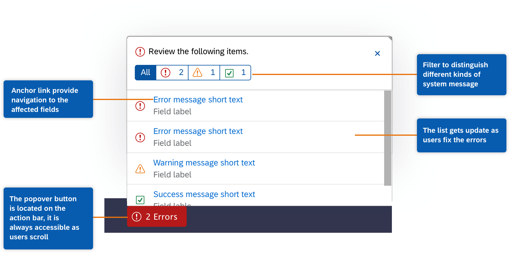
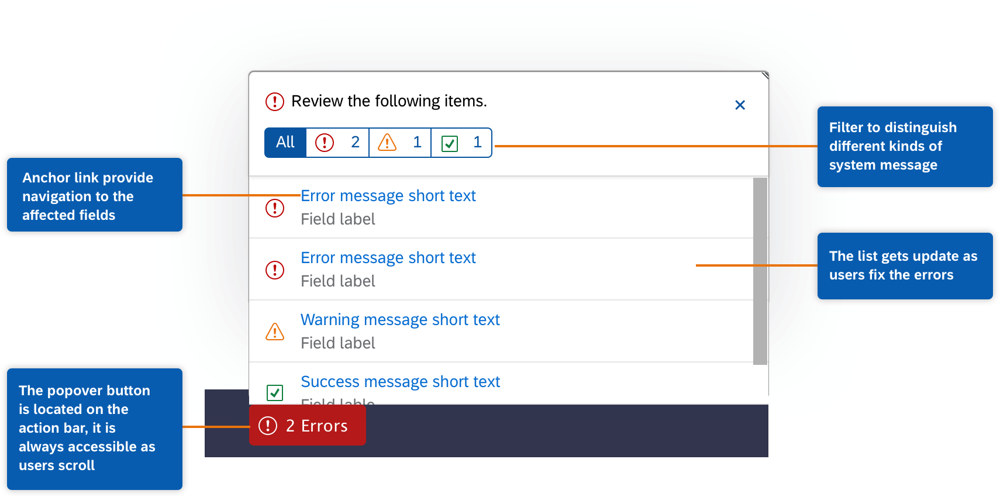
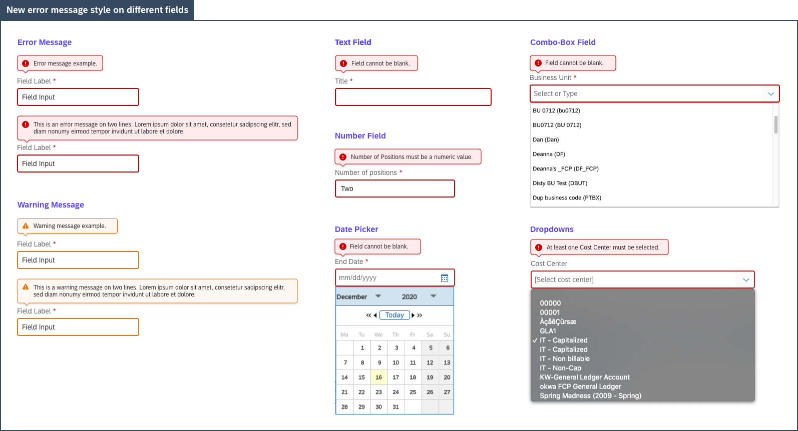

SAP Fieldglass Form Error Handling
Redesign how errors are handled during the form creation process to improve form filling experience
Goals
- Provide clear understanding of the error states and easier navigation to the error fields during form caretion.
- Improve the validation summary section to help users recover from errors and reduce the helpdesk workload about errors
Role
Being the sole designer on this project, I researched, hypothesized, designed and tested the refactorion of the error handling, and worked with PM, developer and QA team to craft a better form filling experience for the users.
Introduction
Refactoring how errors are handled during the complex form creation
The SAP Fieldglass platform helps companies procure, manage, and optimize their external workforces – contract and contingent workers as well as services-based organizations such as law firms and marketing agencies.
SAP Fieldglass requires many form-filling actions. Form field validations and error message handling are important to the user experience of the application. This project will improve error handling by providing a clear understanding of the errors and how to easily navigate to the fields in error.
Problems to be solved
Problem 1: The current validation summary has a low usage because it isn’t helpful.
The current form validation summary shows up after the form is returned from server-side validation. It locates on the top of the form and the users need to click the “View all errors and warnings” link to view a full list of items. Research shows that this section has low usage because users either don’t expand the list or scroll up and down to see the list.
Hypothesis
We redesign the validation summary so that it can provide more help when the users are correcting errors.
Problem 2: Users have trouble keeping track of the correction progress.
The form page is overwhelmed with multiple errors. Users need to consistently scroll up and down to locate the error fields. Users couldn’t know whether they correct the errors or not until they resubmit the form.
Hypothesis
We design a method to keep users informed as they refilling the fields so that they know what else they need to fix. Error messages should go away as errors got fixed.
Problem 3: Most competitors have client-side validation but we don't.
Most of our competitors have client-side validation for their form filling process. Besides, users experience client-side validation for their day to day online experience, and they expect to see similar features on our platform.
Hypothesis
We can implement client-side validation on our platform, which will provide real-time guidance and increase the form filling success rate.
Design Exploration
Identify the design opportunities
After synthesizing the problems and findings from the research, we identified the design opportunities lie in two major areas, the validation summary and the implementation of client-side validation.
Design Solution
1. New validation summary pop-over
The new validation summary popover located in the sticky action bar. As a result, it is always accessible as users scroll. It also provide anchor link for users to quickly navigate to the affected field. Besides, the message list gets update as users interact with the form field so that users can keep track of the fixing progress.
 

2. Implementing client-side validation
Client-side validation provides real-time feedback as users lose focus on a field, which provide more support as users filling out the form. It also make the platform feel more trustworth and intelligent.
3. Updating the error style for new validation behavior
A new error message style was deisnged as we introduce the new validation summary and client-side validation. The new error message located on the top of the field label to fit the various field type on the platform, such as combo-box, dropdown field. It also follows the display order in the message popover.
